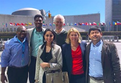
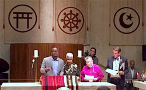

Friends,
Last week, I was at the United Nations on behalf of the Fellowship of Reconciliation.
|

FOR's international delegation to the UN special session, from left: International FOR Coordinator Rev. Lucas Johnson, FOR Director of Campaigns and Strategy Anthony Grimes, Meet the Middle East Director Iman Jodeh, the American Friends Service Committee's Wage Peace Coordinator John Lindsay-Poland, myself, and Chile SERPAJ Regional Director Carlos Martinez.
|
The UN General Assembly convened a "special session on the world drug problem," (UNGASS) and thanks to your support, members of the FOR community and I were there to help shape the response from faith communities and non-governmental organizations from around the world.
The UN special session on global drug policy showed that the dots are all connected: from a culture of violence and war to racism, sexism and dehumanization to retributive justice and mass incarceration. In our commitment to nonviolence as a way of life and a strategy to untangle this web of suffering, FOR’s participation in the special session was essential.
We believe this UN event will usher in a new era of humane solutions to the drug crisis -- but we need your help to continue this work.
Make a donation to FOR-USA today.
For a century, a hallmark of the Fellowship has been our commitment to strategic collaboration. Our work on confronting failed drug policy is no different: we have partnered with the Samuel DeWitt Proctor Conference, a highly-respected U.S. network of progressive Black faith leaders committed to justice who brought a strong multiracial, multifaith, and womanist perspective to UNGASS.
FOR and the Proctor Conference share a common commitment to ending the stigmatization of drug addicts as criminals, and to instead recognize them as children of God.
Our partnership with the Proctor Conference led to co-producing an interfaith response, "Ending the Harm Unleashes the Power of Transformation," [PDF] featuring essays from distinguished interfaith and international leaders.
The interfaith response was crafted in the spirit of FOR member Dr. Martin Luther King Jr.'s landmark April 1967 speech "Beyond Vietnam: A Time to Break the Silence," in which Rev. King calls society to a revolution of values -- a shift from a "thing centered society" to a "people centered society."
It is our belief that a people-centered global drug policy will result in more societies that never give up on human potential and are therefore more restorative than punitive in drug measures and crime reduction.
Help FOR-USA in its work for a people-centered global drug policy.

International FOR Coordinator Rev. Lucas Johnson, left, preaches during the multifaith service at the United Nations. |
We know that a true revolution in values will mean addressing the conditions of all of our communities, created by people in power, that produce drug crime in the first place.
With your support, we facilitated an internal dialogue at the UN to build greater cross-network collaboration around drug policy and harm reduction. We also served as essential resources for the multifaith coalitions who were there, and joined a chorus of UN General Assembly participants working toward a more humane international response to global drug policy.
And we've kept the momentum going by hosting a conference call with members of the international delegation reflecting on their experience and brainstorming next steps with activists all over the country.
Friends, this is a powerful moment. We have the opportunity to shift away from militaristic and racist policies that have demonized our fellow human beings and destroyed communities to move toward a compassionate response.
Your support makes this possible.
Please make a gift to FOR today to ensure the work we did at this month's U.N. summit will impact a wider audience.
With your support, we will be able to tell these stories of healing in new ways. Thank you.
In peace and with gratitude,
 Rev. Kristin Stoneking Rev. Kristin Stoneking
Executive Director
Fellowship of Reconciliation USA
|